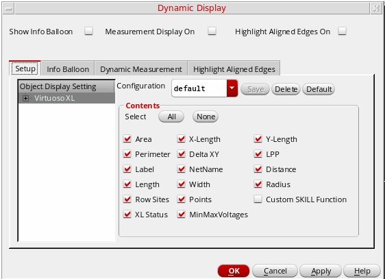
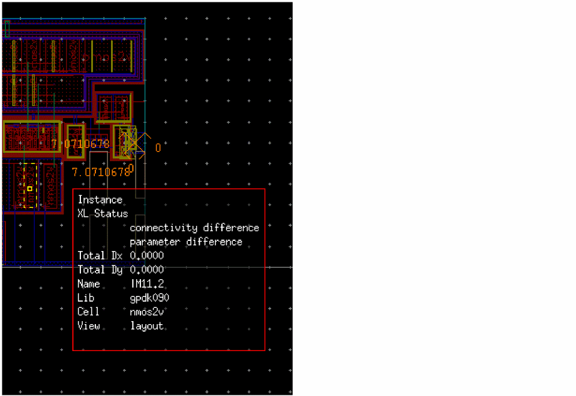

Viewing XL Status
You can look up the XL Status information on the canvas by pointing over the object for which you want to look up the information.
To view the XL Status information on the canvas:
-
Select the Options – Dynamic Display command.
The Dynamic Display form appears. - Select the Show Info Balloon check box.
-
In the Setup tab, select the XL Status check box.
 -
Click OK.
Pointing over a design object pops up the associated information balloon displaying the XL status information, as shown in the figure below.

The advantage of using the balloon information to view the XL Status is that you can get the required information straight on the canvas without having to pull up the Navigator assistant.
The XL Status information is displayed on the canvas only for instances, shapes, and pins. However, if a shape is attached to a net, the balloon also displays information about that net.
XL Status of a design provides up-to-date information about the XL-compliance of the design. The information, such as whether or not an instance is bound or has any opens or shorts, is dynamically updated and can be accessed via the Navigator assistant or through the information balloon available in the canvas.
You can also view the XL Status information in the Navigator assistant using one of the following:
The various XL Status values possible and their description is given below. Irrespective of the method you use to view XL Status, the same information is available for each object at a given point of time.
- For instances and pins with no associated problems, the XL Status displays as OK.
- For mosaic instances that are in a one-to-one correspondence with the schematic mfactored instance, the XL Status reports an OK. If the correspondence is not one-to-one, the XL Status reports a complex binding.
- For nets with no opens or shorts reported during the last extraction run, the XL Status displays as no markers. However, if the design has been edited since the last extraction run, the no markers status may no longer be valid.
- For instances and terminals that are bound by using the Define Device Correspondence Form form, the XL Status displays as OK (user binding).
Navigator — XL Status Column
The advantage of using the XL Status column in the Navigator assistant is that you get to view the XL status for all your design objects in one go. The column displays XL status information for each instance, pin, and net in the design and also cross-selects the object in the canvas.
The XL Status column is displayed in the Navigator assistant by default if the xlStatus environment variable is set to true.
You can use the Search feature to filter the information based on same status or sort the objects by XL Status by clicking the XL Status column header. This feature is extremely useful when resolving a particular type of design issue, such as resolving unbound instances. By default, the information in the Navigator assistant is sorted based on name.
You can also directly select an object from the Navigator and apply appropriate commands from the context menu to resolve the schematic and layout discrepancy being reported for the object in the XL Status column.
Navigator — Attention Icon
You can view the XL Status information by pointing towards the Attention icon ( ) displayed adjacent to the instance name. The icon is displayed only for those instances that have a design issue requiring your intervention.
Based on the type of the issue, you are required to take appropriate corrective action, after which the Attention icon disappears.
For example, an instance displaying an Attention icon may show the XL status in the information balloon as placed outside boundary (ignored). For the status to be converted to OK and the Attention icon to be removed, you must move the instance inside the PR Boundary.
Related Topics
Selecting and Deselecting Nets in Navigator
Return to top